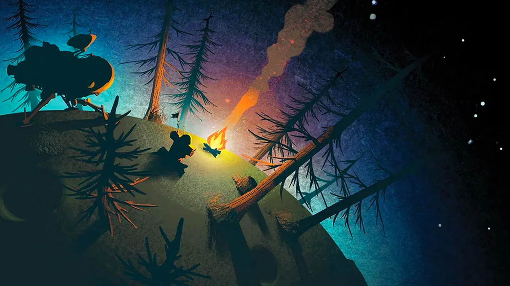
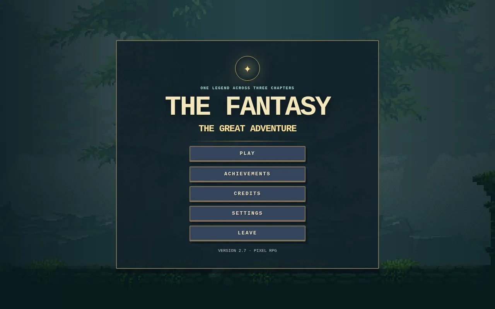

L'étudiant que je suis
Je poursuis un BUT Informatique pour progresser en développement, apprendre à travailler en équipe et découvrir de nouvelles méthodes de conception.
Étudiant en BUT Informatique à Arles, je crée des programmes, des jeux et des projets web pour apprendre en expérimentant.
{
"name": "Clément Dufour",
"education": "BUT Informatique",
"focus": ["Python", "C++", "Web"],
"goal": "Game developer",
"location": "France"
}Passionné par l'informatique depuis mes premiers projets en NSI, je suis désormais étudiant en BUT Informatique à Arles. Je m'intéresse particulièrement à la programmation et au développement de jeux vidéo. J'aime imaginer des univers, créer des mécaniques de jeu et résoudre les problèmes rencontrés en cours de développement.
Python · C++ · algorithmique
HTML · CSS · JavaScript
Git / GitHub · Linux · Bash · VirtualBox
Je me suis intéressé à la programmation en réalisant mes premiers jeux. Aujourd'hui, je continue à expérimenter, à imaginer de nouvelles mécaniques et à découvrir différents domaines de l'informatique.
Je poursuis un BUT Informatique pour progresser en développement, apprendre à travailler en équipe et découvrir de nouvelles méthodes de conception.
J'aime partir d'une idée simple, construire un prototype, tester ce qui fonctionne et l'améliorer. C'est cette démarche qui me plaît dans les jeux vidéo.

Du Blackjack à Mancala et The Fantasy, chaque projet m'aide à mieux comprendre les algorithmes, les interfaces et la structure d'un programme.

RPG · JAVASCRIPTMon RPG fantastique : des classes de personnages, des combats et une aventure en trois chapitres. Né en Python, il évolue aujourd'hui en jeu web.
 PYTHON · PYGAME
PYTHON · PYGAMEUn jeu de stratégie pour travailler la logique et les interfaces graphiques.
 BLACKJACK · WEB
BLACKJACK · WEBDécouverte de la programmation, de Python et premiers projets de jeux.
Développement en C++, bases de données, systèmes, web et projets en équipe à Arles.
Amélioration de The Fantasy, Mancala et de mon portfolio en parallèle de mes études.
Continuer à développer mes compétences, réaliser des stages et poursuivre mes études.
Quelques indicateurs issus de mes dépôts publics.
Tu as une question ou une idée de collaboration ? Tu peux me contacter via ce formulaire ou consulter mon GitHub.
GitHub ↗CV : en préparation